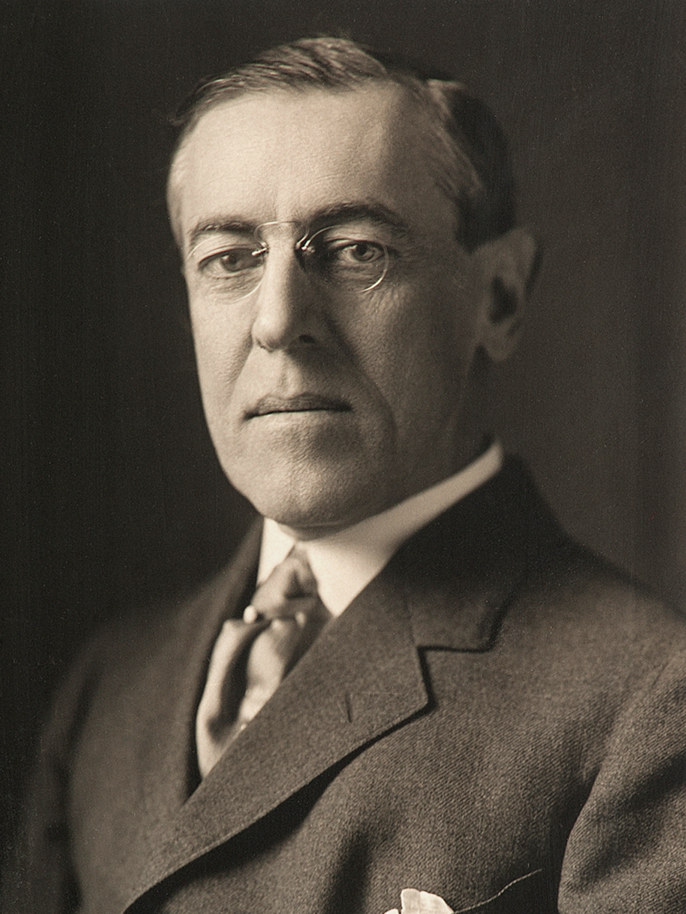

วูดโรว์ วิลสัน (Woodrow Wilson)

เป็นประธานาธิบดีคนที่ 28 ของสหรัฐอเมริกา ผู้มีบทบาทสำคัญในการปฏิรูปเศรษฐกิจภายในประเทศตามแนวทางก้าวหน้า และเป็นผู้นำพาประเทศผ่านช่วงสงครามโลกครั้งที่ 1 พร้อมเสนอแนวคิดจัดตั้งสันนิบาตชาติ1. ช่วงแรก: รักษาความเป็นกลาง (1914–1917)พยายามให้สหรัฐฯ อยู่นอกสงครามเพื่อความสงบภายในประเทศยอมเปลี่ยนใจประกาศสงครามกับเยอรมนีในปี 1917 หลังเรือสินค้าสหรัฐฯ ถูกเรือดำน้ำเยอรมันลอบโจมตีอย่างต่อเนื่อง2. ช่วงเข้าร่วมสงคราม: พลิกเกมรบ (1917–1918)ส่งกองทัพสหรัฐฯ เข้าช่วยฝ่ายสัมพันธมิตร (อังกฤษ-ฝรั่งเศส)การสนับสนุนด้านกำลังพลและอาวุธทำให้ฝ่ายสัมพันธมิตรพลิกกลับมาชนะสงคราม3. ช่วงหลังสงคราม: ผู้วางรากฐานสันติภาพ (1918–1919)เสนอ "หลักการ 14 ข้อ" เพื่อใช้จัดระเบียบโลกใหม่แบบยุติธรรม ไม่เน้นการล้างแค้นผู้แพ้ริเริ่มก่อตั้ง "สันนิบาตชาติ" (League of Nations) องค์กรกลางเพื่อป้องกันสงครามในอนาคต (ซึ่งต่อมาได้กลายเป็นต้นแบบของ UN)